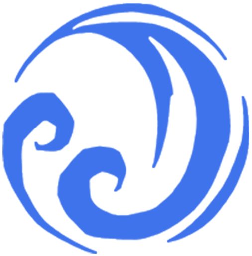
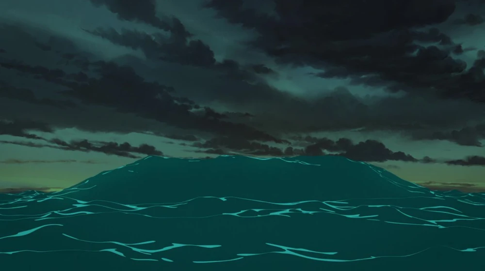

Ocean
Opis
Magia oceanu moc czerpie z głębin oceanów i pływów, a jej moc łączy się z rzekami i jeziorami, które do niej wracają. To źródło jest najsilniejsze podczas przypływu. Oceaniczni magowie mogą odzwierciedlać naturę swojego domu: mag bagienny i mag rzeczny wyglądaliby inaczej, chociaż obaj łączą się z tym samym Pierwotnym Źródłem. Stworzenia związane z oceanem często nawiązują silne połączenia z innymi i mogą mieć ukryte głębiny.
Tajemnica
Tajemnica Oceanu wymaga odnalezienia spokoju pośród ciągłych zmian i zrozumienia wrodzonych cech wody - transformacji, płynności i adaptacji. Zamiast kontrolować przypływy lub walczyć z prądami, prawdziwa tajemnica Oceanu jest odwrotna; że nie masz kontroli. Chodzi o zaakceptowanie, że istnieją głębiny, których nie widzisz, że są części ciebie, których nie rozumiesz, że są rzeczy, których nie można kontrolować, i że nie możesz kontrolować wszystkiego, bez względu na to, jak bardzo się starasz.
Splot
Splot tego źródła jest nieznany.
Quiz